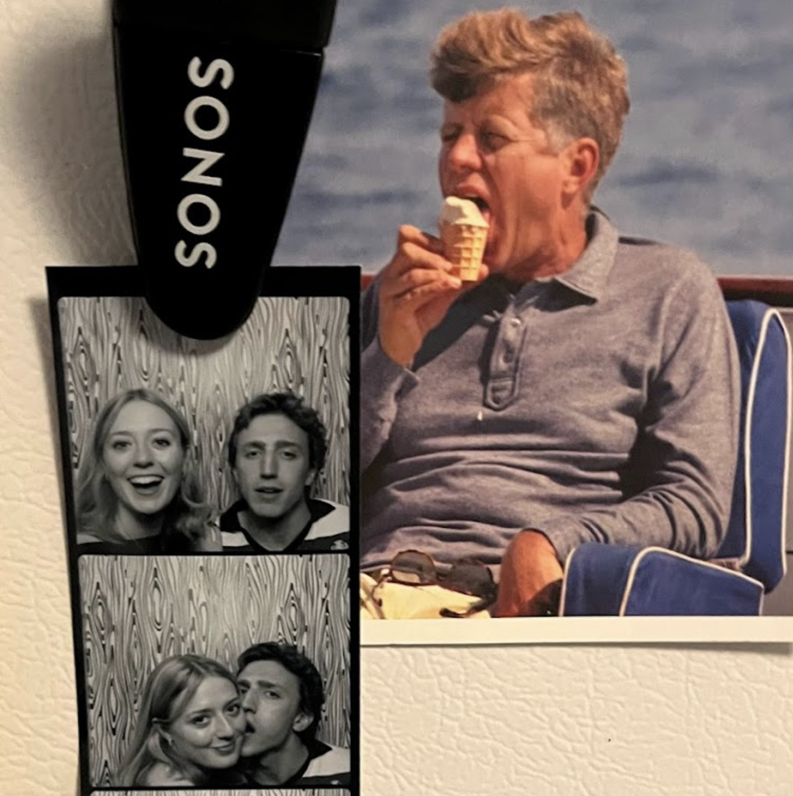

This is my first note on my website.
I have realized that I have ranted for
a long time constantly
about people owning things themselves
and how we should all take more creative
control of our lives and what we do.
I will no longer be a hypocrite and i will
actually do things with this site.
I was up in Maine the last few days staying
on the coast with my girlfriend Lola.
We drove back this morning and stopped at
what my friends and I have begun to refer to
as a "dumb store". A dumb store is any store
that you walk into and you imediately feel
that an $18 pair of blue squiggly candles
fits the bill. They are owned
and operated almost in entirely by milenials
who probably still enjoy saying "I mustache you
a question" (honestly I do too).
I love these stores. I got a butter
holder and a new wine opener for cheap
because its the off season.
We walked around doing nothing, went to the same
restaurant twice since nothing was open,
and watched Silver Linings Playbook.
It was a great weekend.
EDIT: Alright we broke up but I think these pictures
are lovely so i'll keep them around. What're you gonna do.
She is a sweet girl
Lola on rocks

My fridge
back to notes